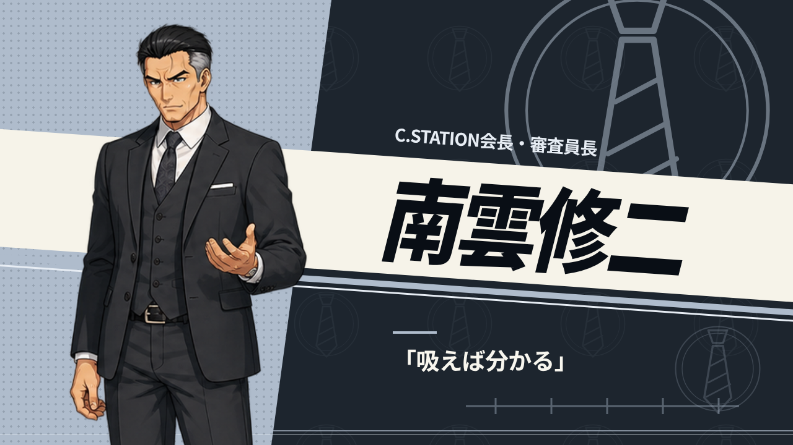

<!doctype html><html lang="ja"><meta charset="utf-8"><title>幾何学とイラストの比較</title><style>body{margin:0;background:#0b0f14}.grid{display:grid;grid-template-columns:repeat(2,640px)}img{width:640px;height:360px;display:block}</style><main class="grid"></main></html>